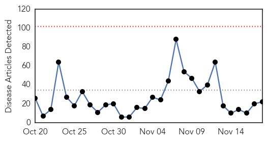
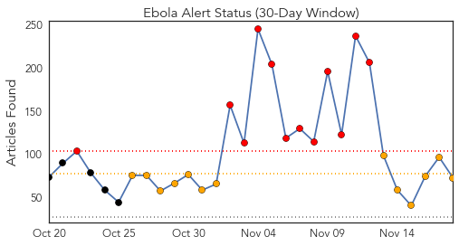
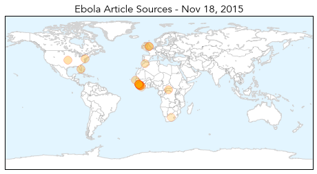
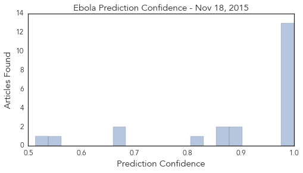
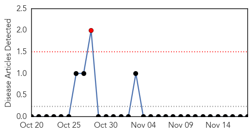
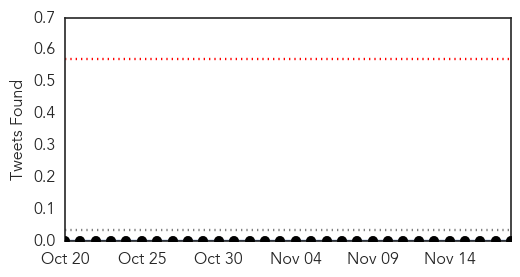
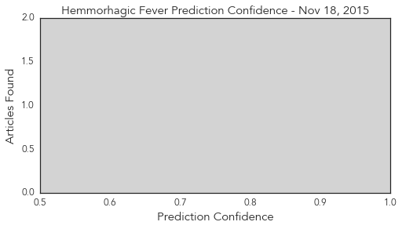

Ebola
30-Day Web Trend
0 alerts, 0 warnings

30-Day Twitter Trend
30 alerts, 0 warnings

Article Locations
Article Confidences
Top Articles:
- 1.000
- Guinea may soon be declared free of Ebola virus
- 1.000
- After 2 Years , Finally end of Ebola in Guinea
- 0.999
- Guinea Enters Countdown Toward Official Declaration Of The African Nation Being Ebola-Free : LIFE : Tech Times
- 0.999
- Guinea, last nation with ebola, may soon be declared free of virus
- 0.999
- Anesthetic Implications of Ebola Patient Management: A Review of the Literature and Policies.
- 0.999
- Last known Ebola case in Guinea recovers
- 0.998
- Guinea, last nation with Ebola, may soon be declared free of virus
- 0.998
- Guinea Counts Down to End of Ebola
- 0.997
- NIH to test Ebola vaccine candidate in humans -
- 0.987
- Guinea begins countdown to being Ebola-free
- 0.986
- Guinea’s last Ebola patient released from care
- 0.981
- GlaxoSmithKline Ebola vaccine shows safety in PhI
- 0.978
- Ebola vaccines trial starts in Liberia
- 0.903
- Exhibition documents army nursing role in ebola outbreak
- 0.898
- From Ebola boots to terror targets, Imperial War Museum explores modern military
- 0.878
- Royal Air Maroc Honored for Serving Liberia During Ebola Epidemic
- 0.863
- Chief Medical Officer Expresses MOHS Readiness to improve Status of Emergency Obstetric and Newborn Care in Sierra Leone.
- 0.809
- Head of Civil Service, Dr. Ernest Surur, Calls for Accurate Human Resource Data Base for effective planning and service delivery.
- 0.680
- EBOLA VIRUS IS GONE, BUT ENEMIES OF PEACE AND DEVELOPMENT ARE ONIT AGAIN TO INCITE VIOLENCE`
- 0.666
- 'Over 4,000 Health Workers For Liberia' -MOH Comm. Director Reveals
- 0.551
- Orientation for M & E Officers and Data Clerks on Data Collection Forms
- 0.513
- Fighting Extremes: From Ebola to ISIS.
Top Tweets:
- 0.997
- Ebola: Last Known Ebola Patient Cured In Guinea? - https://t.co/sZhNfZPvUT ebola
- 0.996
- West of England: Update on Ebola virus outbreak - https://t.co/orcP3RoMmP ebola
- 0.995
- Nach Ebola: Überlebende kämpfen mit Folgeerkrankungen - https://t.co/bk3aXRcm7u ebola
- 0.995
- Kasar Guinea Ta Kusa Fita daga Cutar Ebola - https://t.co/nraVP5lI10 ebola
- 0.994
- Nach Ebola: Überlebende kämpfen mit Folgeerkrankungen - Deutsche Welle https://t.co/dINZwzC7Dj ebola EVD
- 0.993
- Last known Ebola patient in West Africa recovers - https://t.co/nKbkHZSr1l ebola
- 0.992
- Last Known Ebola Patient Tests Negative - https://t.co/lplnwai3Sc ebola
- 0.992
- After 11000 deaths, Ebola outbreak could finally be over - https://t.co/JufK1PsUGD ebola
- 0.991
- Guinea Clears Last Ebola Patient Of Disease, Begins 42-Day Countdown To Ending Epidemic - https://t.co/Km8enT0hZT ebola
- 0.990
- 'Bye Bye' to Ebola, Sierra Leone is celebrating - https://t.co/f2GsCQ1J7X ebola
- 0.986
- Chernor Bah's book offers glimpse into the Ebola outbreak in West Africa - https://t.co/2Naxf4kPC0 ebola
- 0.982
- State Health Department no longer tracking Africa visitors for Ebola - https://t.co/8W7LEpFDPo ebola
- 0.979
- News in the Humanosphere: No known cases of Ebola in Africa - https://t.co/b3u3sTwAmP ebola
- 0.979
- Last known Ebola case in Guinea recovers - https://t.co/ZFY2cWYdPd ebola
- 0.978
- Guinea's last Ebola patient released from medical care - https://t.co/nuo9w1kIKZ ebola
- 0.976
- Surveillance for Ebola Virus in Wildlife, Thailand - https://t.co/7DRaR1rSlP ebola
- 0.976
- Ebola Vaccine Stimulates Immune Response - https://t.co/Hw2Vpp4IEi ebola
- 0.975
- Helping 15000 ebola survivors is top priority: UN ebola chief - https://t.co/yFb02elMUU ebola
- 0.973
- Guinea's last Ebola patient recovers in Conakry - https://t.co/q6f8GJvcLZ ebola
- 0.969
- guinea may soon declared free of ebola virus - https://t.co/eEOzTYGMeU ebola
- 0.968
- The Last Known Ebola Patient in Africa Has Recovered - https://t.co/ccqTHVtDYX ebola
- 0.968
- GlaxoSmithKline Ebola vaccine shows safety in PhI - https://t.co/TVSf0454AC ebola
- 0.968
- Ebola Bulletin A national strategy for Guinean Ebola survivors - https://t.co/68BciOhfVQ ebola
- 0.967
- Minnesota has a Ebola treatment center to treat west Africans with Ebola Minnesota home to ebola center
- 0.960
- FDA-approved drug protects mice from Ebola - Medical Xpress https://t.co/Tt9xZtI7Pj ebola EVD
- 0.959
- Emergency Appeal Operation Update - Ebola Virus Disease Emergency Appeals (Guinea, Liberia ...... https://t.co/OLzutFKkqa
- 0.958
- Ebola epidemic close to being declared over - https://t.co/y8I4OWwzYt ebola
- 0.956
- An Ebola-Free Sierra Leone Marks a Moment for Celebration - https://t.co/mpN9vbQIYF ebola
- 0.955
- Helping 15000 ebola survivors is top priority: UN ebola chief - Toronto Star https://t.co/1QKHg12ISN ebola EVD
- 0.954
- Watch the People of Sierra Leone Sing and Dance as Country Beats Ebola - TIME https://t.co/S11kdOni1w ebola EVD
- 0.952
- Baby girl, last known Ebola patient in Africa, recovers - https://t.co/dTNCyHiKxw ebola
- 0.951
- Watch the People of Sierra Leone Sing and Dance as Country Beats Ebola - https://t.co/rSUF53nCKW ebola
- 0.950
- Profectus BioSciences Ebola vaccine is effective, animal study shows - https://t.co/8dfHEuaHOY ebola
- 0.946
- Guinea's Ebola baby cured - https://t.co/ITE12YoKXo ebola
- 0.946
- Ebola leaves its survivors on their knees - https://t.co/ZpO9jHUcte ebola
- 0.941
- After Nearly 2 Years, Guinea Begins Countdown To End Of Ebola Epidemic « » The Henry J ... - https://t.co/BskpdhRePZ ebola
- 0.939
- Gamma interferon may have potential to prevent Ebola infection - https://t.co/Ao5TaRyeBP ebola
- 0.936
- Last Ebola Patient, a Baby Girl Named Nubia, Recovers - https://t.co/60lwvihFuD ebola
- 0.933
- Profectus shares preclinical data for vaccine against Ebola and Marburg - https://t.co/mlgPTYzeoL ebola
- 0.930
- Guinea begins countdown to end of Ebola transmission - https://t.co/5RpMDyDHwu ebola
- 0.929
- Study finds that Ebola vaccine is safe and stimulates strong immune response - Medical Xpress https://t.co/W83P6HIBBe ebola EVD
- 0.923
- Guinea begins countdown to being Ebola-free - https://t.co/y5L2EDxiQA ebola
- 0.923
- Guinea begins countdown to being Ebola-free - https://t.co/V27vSG1GHP ebola
- 0.915
- PICS bags aided farmers in Ebola-stricken Sierra Leone - https://t.co/9qm7Hju15n ebola
- 0.913
- Guinea Enters Countdown Toward Official Declaration Of The African Nation Being Ebola-Free - https://t.co/JhCvwBAcTm ebola
- 0.913
- Guinea Counts Down to End of Ebola - https://t.co/tMZZQo8CdJ ebola
- 0.913
- Guinea Counts Down to End of Ebola - https://t.co/TqIhJ8YT3N ebola
- 0.909
- FDA-approved drug protects mice from Ebola - https://t.co/hIVt0gvmfK ebola
- 0.906
- Ebola is almost gone but the viral threat remains - https://t.co/R5LqhGF38T ebola
- 0.898
- Profectus BioSciences Ebola vaccine is effective, animal study shows - Baltimore Sun https://t.co/0ppIypQKxY ebola EVD
Showing top 50 tweets...
Hemmorhagic Fever
30-Day Web Trend
1 alerts, 0 warnings

30-Day Twitter Trend
0 alerts, 0 warnings

Article Locations

Article Confidences
Top Articles:
-
No articles found for Nov 18, 2015
Top Tweets:
-
No tweets found for Nov 18, 2015